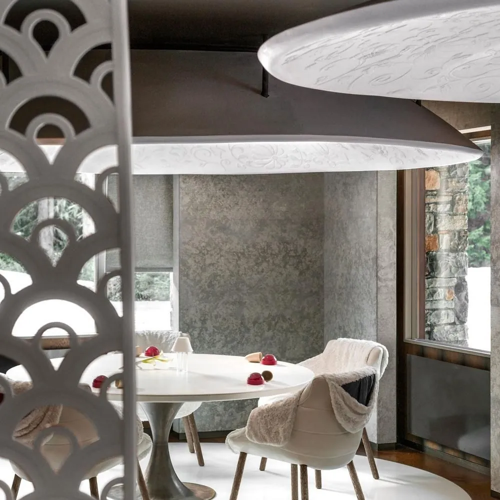
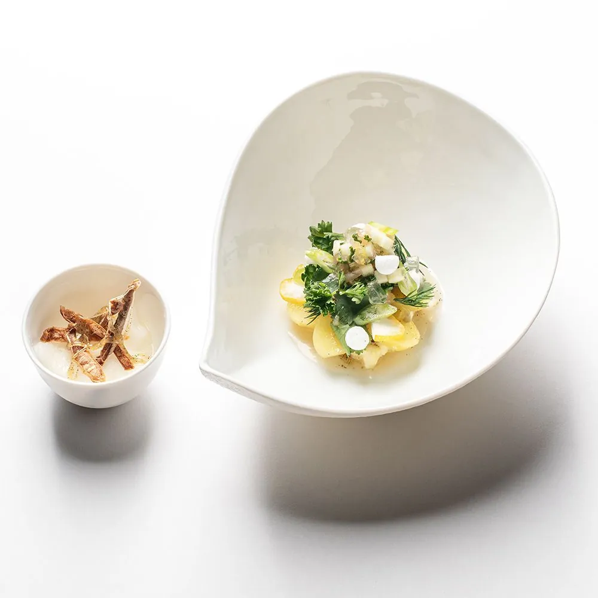
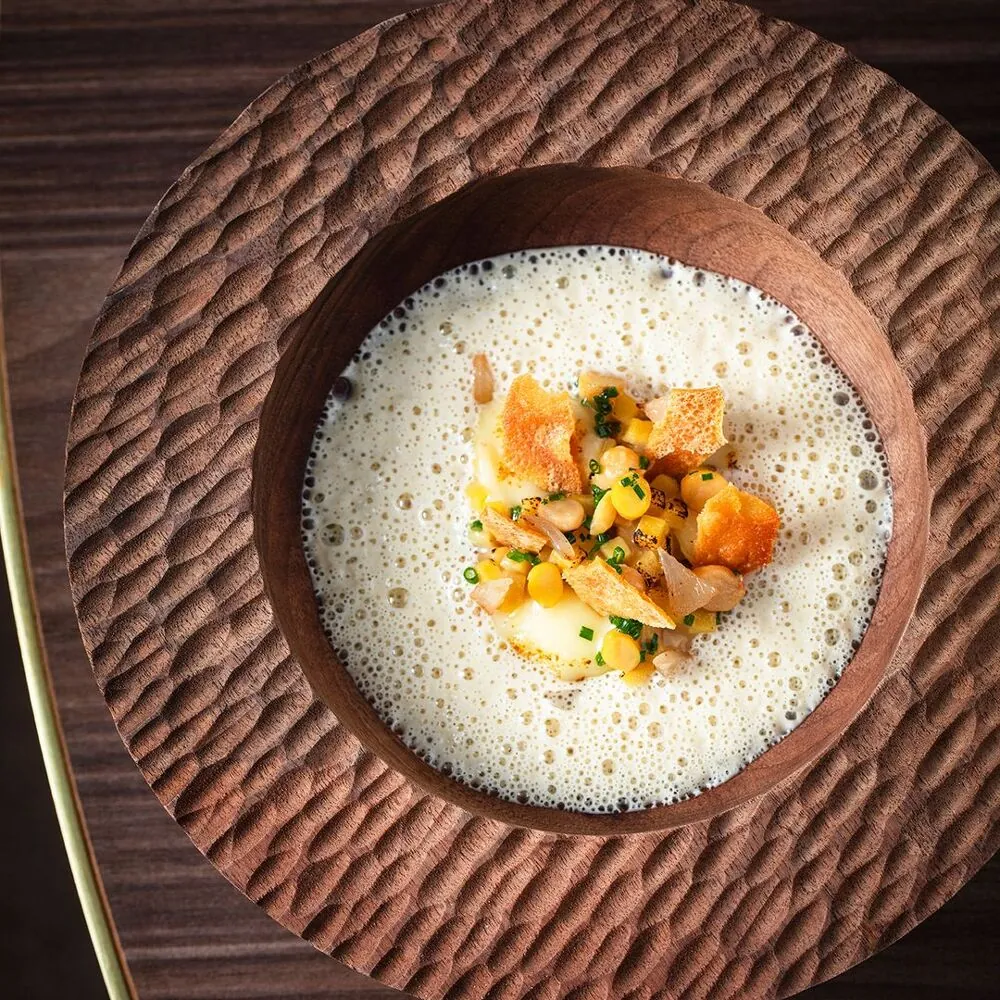

Three starred kitchens. One narrow window. The question that precedes every other decision.
The entire expedition collapses to one prior question: which season? Every other choice — restaurant, activity, pace — is downstream of it. The Michelin constellation and the activity portfolio share the same window: December through April. Outside it, specifically in May and June, Courchevel 1850 runs with lifts shut and Michelin kitchens dark.[1] All three active 2–3★ restaurants close when the ski season ends[2] — a point the restaurant research and the activities research confirm independently from opposite angles. This is not a scheduling inconvenience; it is a binary.
The starred landscape itself shrank mid-season. The January 2026 fire that gutted Les Grandes Alpes hotel permanently removed Sylvestre Wahid's 2★ from the valley[3] — Wahid has since relocated to Provence. What remains are three restaurants at meaningfully different positions, all keyed to the same ski-season gate.
Wine bills in Courchevel routinely match or exceed the food tasting menu price — build that into the envelope before choosing which star level to target.From the expedition research · 76 sources consulted

Named after the legendary 1947 Château Cheval Blanc vintage. Five tables in a room designed by Sybille de Margerie — the open kitchen visible to every diner. Alléno's hallmark is long-fermented sauces that concentrate Savoie terroir into pure intensity;[14] the menu evolves each winter around high-altitude alpine and rare vegetable ingredients. The sole three-star in Les 3 Vallées — a designation held since 2017.[17]

The only two-star menu in France led by a pastry chef. Plant-based, textural, unlike anything else in the country.[16] The vegetarianism is incidental — the point is temperature contrast, unexpected pairings, and pâtissier technique applied to savoury architecture. Panoramic mountain views throughout.

Prod'homme trained at the Oustau de Baumanière in Les Baux-de-Provence, then moved up to 1850m. Alpine dairy, game, and wild herbs from Savoie, finished with Provençal technique.[18] Three menus by depth: Slalom (lighter), Schuss, Sphère (full). The most financially accessible two-star in the valley.
| Activity | Dec – Apr (Ski Season) | Jul – Aug (Summer) | May – Jun |
|---|---|---|---|
| Michelin dining — Le 1947, Le Sarkara, Baumanière 1850 | ✓ All three open | ✗ All closed | ✗ All closed |
| Les 3 Vallées — 600 km ski domain[8] | ✓ Full access | ✗ Lifts shut | ✗ Lifts shut |
| Saulire cable car · lift-served MTB & hiking[9] | ✓ Ski access | ✓ Summer lift open | ✗ Between seasons |
| Aquamotion + palace spas[10] | ✓ Full programme | ✓ Open | ~ Check schedule |
| Lac de la Rosière walks[11] · Col de la Loze cycling[12] | ✗ Snow-covered | ✓ Full access | ✓ Available |
If dates are fixed in June, Courchevel remains a pleasant Alpine village — Aquamotion, Lac de la Rosière, and Col de la Loze[12] make a decent low-key weekend. But the Michelin premise must be dropped entirely, or the dates must move. If winter is possible, it is the unambiguous answer — all three restaurants open, the full 600 km ski domain[8], and the palace infrastructure that makes Courchevel 1850 the reference point for this kind of trip.